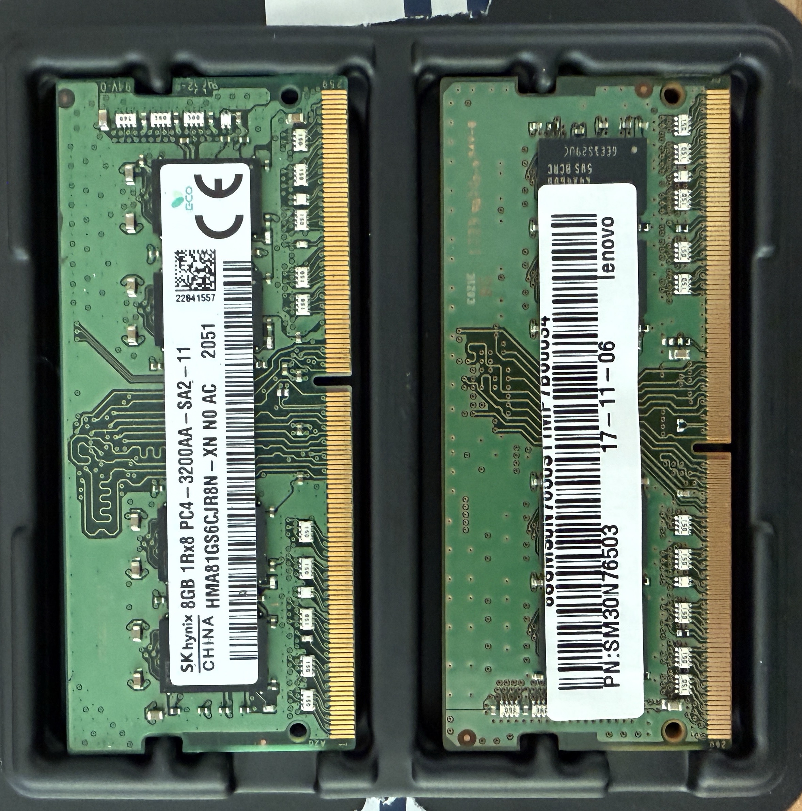
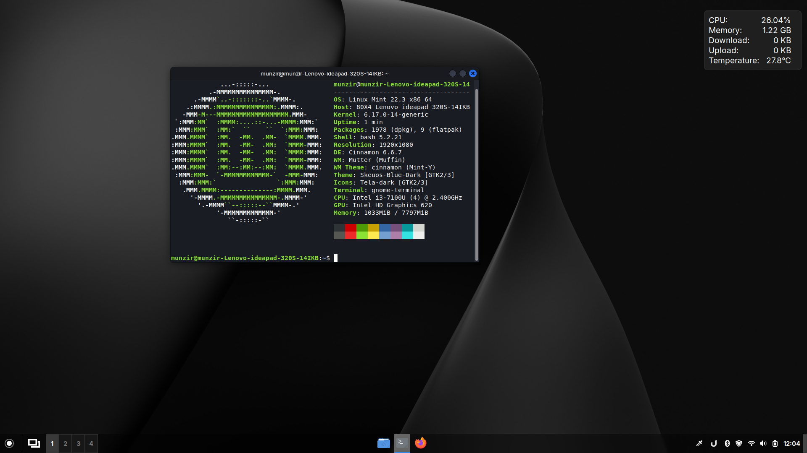

Ctrl + Alt + Reborn
Taking an old Lenovo that could barely run Windows and giving it a second life with Linux Mint.
My sister somehow got through an entire degree with an old Lenovo that struggled to run Windows. 4GB of RAM and a dual-core i3 processor aren't necessarily a bad combination, but Windows has this tendency to slow down on older laptops as they age and recieve more updates. She recently upgraded to a MacBook which is running way better, but rather than let her previous laptop collect dust, I decided to give it a second life with some upgrades and installing an much lighter operating system: Linux Mint.
Upgrading RAM
Upon removing the back panel I was greeted with one singular RAM slot. Not great but at least it gave me some room to work with. I had a spare 8GB RAM stick from upgrading my server earlier. You can read more about that here.


I screwed the panel back on and booted up the laptop. It didn’t boot. Turns out I had to remove the battery before installing the RAM due to residual power still running through the motherboard, preventing a proper hardware reset. So I disconnected the battery, plugged in the charger, powered it on, then shut it back down and reconnected the battery. After that, it booted perfectly. Now it was time to say goodbye to Windows.
Installing Linux Mint
I downloaded the latest version of Linux Mint from their official website and created a bootable USB drive using Balena Etcher. Accessing the boot menu of a Lenovo is a bit of a hassle, but it can be done by inserting a paperclip into a pinhole on the side of the laptop known as the novo button. After that, I booted into the USB drive and installed Linux Mint.

Already the laptop is running much better than before and I was already having fun with my new
Linux playground. The command
With Mint installed and the extra RAM in place, the laptop feels completely transformed. It’s no
longer fighting the operating system, and it’s actually enjoyable to use again.
More importantly, it gives me a dedicated Linux machine to experiment on. I can learn properly,
break things without fear, and get more comfortable working in an environment that’s central to
modern computing and cybersecurity.
Not bad for a nine year old laptop.